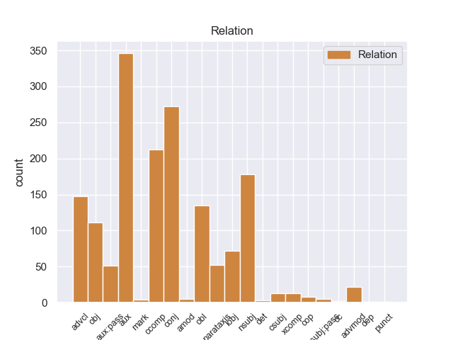
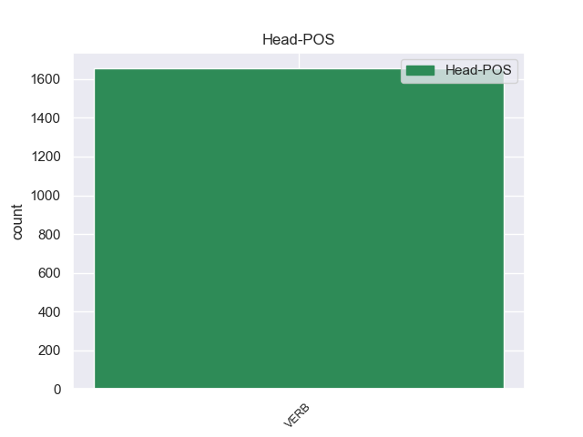
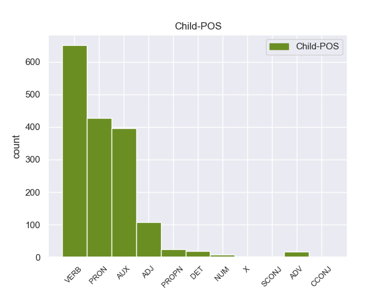

Distribution of features within this leaf



Agreement Rules sorted by frequency.
When the head token is VERB and the dependent token is VERB.
1 Ευελπιστώ _ _ _ _ 0 _ _ _
2 ότι _ _ _ _ 0 _ _ _
3 η _ _ _ _ 0 _ _ _
4 απόφαση _ _ _ _ 0 _ _ _
5 αυτή _ _ _ _ 0 _ _ _
6 , _ _ _ _ 0 _ _ _
7 συμπεριλαμβανομένης _ _ _ _ 0 _ _ _
8 και _ _ _ _ 0 _ _ _
9 της _ _ _ _ 0 _ _ _
10 αιτιολογικής _ _ _ _ 0 _ _ _
11 έκθεσης _ _ _ _ 0 _ _ _
12 που _ _ _ _ 0 _ _ _
13 την _ _ _ _ 0 _ _ _
14 συνοδεύει _ _ _ _ 0 _ _ _
15 , _ _ _ _ 0 _ _ _
16 θα _ _ _ _ 0 _ _ _
17 διαβιβαστεί διαβιβαστr VERB _ Mood=Ind|Number=Sing|Person=3|Tense=Pres|VerbForm=Fin 0 _ _ _
18 σ _ _ _ _ 0 _ _ _
19 τις _ _ _ _ 0 _ _ _
20 γαλλικές _ _ _ _ 0 _ _ _
21 αρχές _ _ _ _ 0 _ _ _
22 , _ _ _ _ 0 _ _ _
23 εφόσον _ _ _ _ 0 _ _ _
24 υπερψηφιστεί υπερψηφιστr VERB _ Mood=Ind|Number=Sing|Person=3|Tense=Imp|VerbForm=Fin 17 advcl _ _
25 από _ _ _ _ 0 _ _ _
26 το _ _ _ _ 0 _ _ _
27 Κοινοβούλιο _ _ _ _ 0 _ _ _
28 . _ _ _ _ 0 _ _ _
When the head token is VERB and the dependent token is VERB. and the head token is VERB and the dependent token is PRON.
1 Ευελπιστώ _ _ _ _ 0 _ _ _
2 ότι _ _ _ _ 0 _ _ _
3 η _ _ _ _ 0 _ _ _
4 απόφαση _ _ _ _ 0 _ _ _
5 αυτή _ _ _ _ 0 _ _ _
6 , _ _ _ _ 0 _ _ _
7 συμπεριλαμβανομένης _ _ _ _ 0 _ _ _
8 και _ _ _ _ 0 _ _ _
9 της _ _ _ _ 0 _ _ _
10 αιτιολογικής _ _ _ _ 0 _ _ _
11 έκθεσης _ _ _ _ 0 _ _ _
12 που _ _ _ _ 0 _ _ _
13 την éτη PRON _ Case=Acc|Gender=Fem|Number=Sing|Person=3|PrepCase=Npr|PronType=Prs 14 obj _ _
14 συνοδεύει συνοδεύειr VERB _ Mood=Ind|Number=Sing|Person=3|Tense=Pres|VerbForm=Fin 0 _ _ _
15 , _ _ _ _ 0 _ _ _
16 θα _ _ _ _ 0 _ _ _
17 διαβιβαστεί _ _ _ _ 0 _ _ _
18 σ _ _ _ _ 0 _ _ _
19 τις _ _ _ _ 0 _ _ _
20 γαλλικές _ _ _ _ 0 _ _ _
21 αρχές _ _ _ _ 0 _ _ _
22 , _ _ _ _ 0 _ _ _
23 εφόσον _ _ _ _ 0 _ _ _
24 υπερψηφιστεί _ _ _ _ 0 _ _ _
25 από _ _ _ _ 0 _ _ _
26 το _ _ _ _ 0 _ _ _
27 Κοινοβούλιο _ _ _ _ 0 _ _ _
28 . _ _ _ _ 0 _ _ _
When the head token is VERB and the dependent token is VERB. and the head token is VERB and the dependent token is PRON. and the head token is VERB and the dependent token is AUX.
1 Ευελπιστώ _ _ _ _ 0 _ _ _
2 ότι _ _ _ _ 0 _ _ _
3 η _ _ _ _ 0 _ _ _
4 απόφαση _ _ _ _ 0 _ _ _
5 αυτή _ _ _ _ 0 _ _ _
6 , _ _ _ _ 0 _ _ _
7 συμπεριλαμβανομένης _ _ _ _ 0 _ _ _
8 και _ _ _ _ 0 _ _ _
9 της _ _ _ _ 0 _ _ _
10 αιτιολογικής _ _ _ _ 0 _ _ _
11 έκθεσης _ _ _ _ 0 _ _ _
12 που _ _ _ _ 0 _ _ _
13 την _ _ _ _ 0 _ _ _
14 συνοδεύει _ _ _ _ 0 _ _ _
15 , _ _ _ _ 0 _ _ _
16 θα er AUX _ Mood=Cnd|Number=Sing|Person=3|VerbForm=Fin 17 aux _ _
17 διαβιβαστεί διαβιβαστr VERB _ Mood=Ind|Number=Sing|Person=3|Tense=Pres|VerbForm=Fin 0 _ _ _
18 σ _ _ _ _ 0 _ _ _
19 τις _ _ _ _ 0 _ _ _
20 γαλλικές _ _ _ _ 0 _ _ _
21 αρχές _ _ _ _ 0 _ _ _
22 , _ _ _ _ 0 _ _ _
23 εφόσον _ _ _ _ 0 _ _ _
24 υπερψηφιστεί _ _ _ _ 0 _ _ _
25 από _ _ _ _ 0 _ _ _
26 το _ _ _ _ 0 _ _ _
27 Κοινοβούλιο _ _ _ _ 0 _ _ _
28 . _ _ _ _ 0 _ _ _
When the head token is VERB and the dependent token is VERB. and the head token is VERB and the dependent token is PRON. and the head token is VERB and the dependent token is AUX. and the head token is VERB and the dependent token is ADJ.
1 Θα _ _ _ _ 0 _ _ _
2 ήθελα _ _ _ _ 0 _ _ _
3 να _ _ _ _ 0 _ _ _
4 επιστήσω _ _ _ _ 0 _ _ _
5 την _ _ _ _ 0 _ _ _
6 προσοχή _ _ _ _ 0 _ _ _
7 όλων _ _ _ _ 0 _ _ _
8 των _ _ _ _ 0 _ _ _
9 συναδέλφων _ _ _ _ 0 _ _ _
10 σ _ _ _ _ 0 _ _ _
11 το _ _ _ _ 0 _ _ _
12 γεγονός _ _ _ _ 0 _ _ _
13 ότι _ _ _ _ 0 _ _ _
14 , _ _ _ _ 0 _ _ _
15 εάν _ _ _ _ 0 _ _ _
16 υπάρχουν υπάρχοar VERB _ Mood=Ind|Number=Plur|Person=3|Tense=Pres|VerbForm=Fin 0 _ _ _
17 κάποιες _ _ _ _ 0 _ _ _
18 ελευθερίες _ _ _ _ 0 _ _ _
19 οι _ _ _ _ 0 _ _ _
20 οποίες _ _ _ _ 0 _ _ _
21 είναι _ _ _ _ 0 _ _ _
22 ζωτικής _ _ _ _ 0 _ _ _
23 σημασίας _ _ _ _ 0 _ _ _
24 για _ _ _ _ 0 _ _ _
25 την _ _ _ _ 0 _ _ _
26 άσκηση _ _ _ _ 0 _ _ _
27 του _ _ _ _ 0 _ _ _
28 λειτουργήματος _ _ _ _ 0 _ _ _
29 της _ _ _ _ 0 _ _ _
30 δημόσιας _ _ _ _ 0 _ _ _
31 εκπροσώπησης _ _ _ _ 0 _ _ _
32 , _ _ _ _ 0 _ _ _
33 ιδίως _ _ _ _ 0 _ _ _
34 για _ _ _ _ 0 _ _ _
35 ένα _ _ _ _ 0 _ _ _
36 Κοινοβούλιο _ _ _ _ 0 _ _ _
37 σαν _ _ _ _ 0 _ _ _
38 το _ _ _ _ 0 _ _ _
39 δικό _ _ _ _ 0 _ _ _
40 μας _ _ _ _ 0 _ _ _
41 , _ _ _ _ 0 _ _ _
42 η _ _ _ _ 0 _ _ _
43 ελευθερία _ _ _ _ 0 _ _ _
44 της _ _ _ _ 0 _ _ _
45 επικοινωνίας _ _ _ _ 0 _ _ _
46 με _ _ _ _ 0 _ _ _
47 άλλους _ _ _ _ 0 _ _ _
48 πολίτες _ _ _ _ 0 _ _ _
49 και _ _ _ _ 0 _ _ _
50 με _ _ _ _ 0 _ _ _
51 τους _ _ _ _ 0 _ _ _
52 πολίτες _ _ _ _ 0 _ _ _
53 τρίτων _ _ _ _ 0 _ _ _
54 χωρών _ _ _ _ 0 _ _ _
55 , _ _ _ _ 0 _ _ _
56 καθώς _ _ _ _ 0 _ _ _
57 και _ _ _ _ 0 _ _ _
58 η _ _ _ _ 0 _ _ _
59 ελευθερία _ _ _ _ 0 _ _ _
60 μετακίνησης _ _ _ _ 0 _ _ _
61 , _ _ _ _ 0 _ _ _
62 είναι _ _ _ _ 0 _ _ _
63 κρίσιμες κρίσιμε ADJ _ Gender=Masc|Number=Plur|VerbForm=Part 16 parataxis _ _
64 για _ _ _ _ 0 _ _ _
65 τη _ _ _ _ 0 _ _ _
66 διεκπεραίωση _ _ _ _ 0 _ _ _
67 του _ _ _ _ 0 _ _ _
68 έργου _ _ _ _ 0 _ _ _
69 μας _ _ _ _ 0 _ _ _
70 . _ _ _ _ 0 _ _ _
When the head token is VERB and the dependent token is VERB. and the head token is VERB and the dependent token is PRON. and the head token is VERB and the dependent token is AUX. and the head token is VERB and the dependent token is ADJ. and the head token is VERB and the dependent token is PROPN.
1 Σύμφωνα _ _ _ _ 0 _ _ _
2 με _ _ _ _ 0 _ _ _
3 αναφορές _ _ _ _ 0 _ _ _
4 , _ _ _ _ 0 _ _ _
5 το _ _ _ _ 0 _ _ _
6 νησί _ _ _ _ 0 _ _ _
7 πρωτοκατοικήθηκε _ _ _ _ 0 _ _ _
8 την _ _ _ _ 0 _ _ _
9 Παλαιοιλιθική _ _ _ _ 0 _ _ _
10 εποχή _ _ _ _ 0 _ _ _
11 , _ _ _ _ 0 _ _ _
12 αποικήθηκε _ _ _ _ 0 _ _ _
13 το _ _ _ _ 0 _ _ _
14 775-_750 _ _ _ _ 0 _ _ _
15 π.Χ. _ _ _ _ 0 _ _ _
16 από _ _ _ _ 0 _ _ _
17 τους _ _ _ _ 0 _ _ _
18 Ερετριείς _ _ _ _ 0 _ _ _
19 και _ _ _ _ 0 _ _ _
20 σ _ _ _ _ 0 _ _ _
21 τη _ _ _ _ 0 _ _ _
22 συνέχεια _ _ _ _ 0 _ _ _
23 από _ _ _ _ 0 _ _ _
24 τους _ _ _ _ 0 _ _ _
25 Κορίνθιους _ _ _ _ 0 _ _ _
26 ενώ _ _ _ _ 0 _ _ _
27 σύμφωνα _ _ _ _ 0 _ _ _
28 με _ _ _ _ 0 _ _ _
29 τον _ _ _ _ 0 _ _ _
30 Όμηρο όμηρο PROPN _ Gender=Masc|Number=Sing 33 obl _ _
31 , _ _ _ _ 0 _ _ _
32 εδώ _ _ _ _ 0 _ _ _
33 βρήκε βρήκar VERB _ Mood=Ind|Number=Sing|Person=3|Tense=Past|VerbForm=Fin 0 _ _ _
34 καταφύγιο _ _ _ _ 0 _ _ _
35 ο _ _ _ _ 0 _ _ _
36 Οδυσσέας _ _ _ _ 0 _ _ _
37 . _ _ _ _ 0 _ _ _
When the head token is VERB and the dependent token is VERB. and the head token is VERB and the dependent token is PRON. and the head token is VERB and the dependent token is AUX. and the head token is VERB and the dependent token is ADJ. and the head token is VERB and the dependent token is PROPN. and the head token is VERB and the dependent token is DET.
1 Δεν _ _ _ _ 0 _ _ _
2 πιστεύω _ _ _ _ 0 _ _ _
3 να _ _ _ _ 0 _ _ _
4 υπάρχουν υπάρχοar VERB _ Mood=Ind|Number=Plur|Person=3|Tense=Pres|VerbForm=Fin 0 _ _ _
5 πολλοί πολλο DET _ Number=Plur 4 advmod _ _
6 άλλοι _ _ _ _ 0 _ _ _
7 συνομιλητές _ _ _ _ 0 _ _ _
8 από _ _ _ _ 0 _ _ _
9 την _ _ _ _ 0 _ _ _
10 πλευρά _ _ _ _ 0 _ _ _
11 των _ _ _ _ 0 _ _ _
12 Παλαιστινίων _ _ _ _ 0 _ _ _
13 . _ _ _ _ 0 _ _ _
When the head token is VERB and the dependent token is VERB. and the head token is VERB and the dependent token is PRON. and the head token is VERB and the dependent token is AUX. and the head token is VERB and the dependent token is ADJ. and the head token is VERB and the dependent token is PROPN. and the head token is VERB and the dependent token is DET. and the head token is VERB and the dependent token is ADV.
1 Τα _ _ _ _ 0 _ _ _
2 ευρωπαϊκά _ _ _ _ 0 _ _ _
3 πολεμικά _ _ _ _ 0 _ _ _
4 χτύπησαν _ _ _ _ 0 _ _ _
5 με _ _ _ _ 0 _ _ _
6 τα _ _ _ _ 0 _ _ _
7 πυροβόλα _ _ _ _ 0 _ _ _
8 τους _ _ _ _ 0 _ _ _
9 , _ _ _ _ 0 _ _ _
10 τους _ _ _ _ 0 _ _ _
11 επαναστάτες _ _ _ _ 0 _ _ _
12 σ _ _ _ _ 0 _ _ _
13 το _ _ _ _ 0 _ _ _
14 Ακρωτήρι _ _ _ _ 0 _ _ _
15 , _ _ _ _ 0 _ _ _
16 ρίχνοντας _ _ _ _ 0 _ _ _
17 τη _ _ _ _ 0 _ _ _
18 σημαία _ _ _ _ 0 _ _ _
19 που _ _ _ _ 0 _ _ _
20 υψώθηκε _ _ _ _ 0 _ _ _
21 αμέσως _ _ _ _ 0 _ _ _
22 πάλι _ _ _ _ 0 _ _ _
23 υπό _ _ _ _ 0 _ _ _
24 τις _ _ _ _ 0 _ _ _
25 θυελλώδεις _ _ _ _ 0 _ _ _
26 ζητωκραυγές _ _ _ _ 0 _ _ _
27 των _ _ _ _ 0 _ _ _
28 πληρωμάτων _ _ _ _ 0 _ _ _
29 των _ _ _ _ 0 _ _ _
30 ελληνικών _ _ _ _ 0 _ _ _
31 πολεμικών _ _ _ _ 0 _ _ _
32 που _ _ _ _ 0 _ _ _
33 ναυλοχούσαν ναυλοχούσ VERB _ Mood=Ind|Number=Plur|Person=3|Tense=Past|VerbForm=Fin 0 _ _ _
34 στ' _ _ _ _ 0 _ _ _
35 ανοιχτά ανοιχτ ADV _ Gender=Fem|Number=Plur 33 advmod _ _
36 αλλά _ _ _ _ 0 _ _ _
37 δεν _ _ _ _ 0 _ _ _
38 μπορούσαν _ _ _ _ 0 _ _ _
39 να _ _ _ _ 0 _ _ _
40 επέμβουν _ _ _ _ 0 _ _ _
41 ενώ _ _ _ _ 0 _ _ _
42 σ _ _ _ _ 0 _ _ _
43 το _ _ _ _ 0 _ _ _
44 θωρηκτό _ _ _ _ 0 _ _ _
45 " _ _ _ _ 0 _ _ _
46 Ύδρα _ _ _ _ 0 _ _ _
47 " _ _ _ _ 0 _ _ _
48 γινόταν _ _ _ _ 0 _ _ _
49 ανάκρουση _ _ _ _ 0 _ _ _
50 του _ _ _ _ 0 _ _ _
51 Εθνικού _ _ _ _ 0 _ _ _
52 μας _ _ _ _ 0 _ _ _
53 Ύμνου _ _ _ _ 0 _ _ _
54 . _ _ _ _ 0 _ _ _
When the head token is VERB and the dependent token is VERB. and the head token is VERB and the dependent token is PRON. and the head token is VERB and the dependent token is AUX. and the head token is VERB and the dependent token is ADJ. and the head token is VERB and the dependent token is PROPN. and the head token is VERB and the dependent token is DET. and the head token is VERB and the dependent token is ADV. and the head token is VERB and the dependent token is NUM.
1 Δεκαεννέα δεκαεννέα NUM _ Number=Plur|NumType=Card 3 nsubj _ _
2 κρατούμενοι _ _ _ _ 0 _ _ _
3 απέδρασαν απέδρασ VERB _ Mood=Ind|Number=Plur|Person=3|Tense=Past|VerbForm=Fin 0 _ _ _
4 από _ _ _ _ 0 _ _ _
5 φυλακή _ _ _ _ 0 _ _ _
6 του _ _ _ _ 0 _ _ _
7 Ιράκ _ _ _ _ 0 _ _ _
When the head token is VERB and the dependent token is VERB. and the head token is VERB and the dependent token is PRON. and the head token is VERB and the dependent token is AUX. and the head token is VERB and the dependent token is ADJ. and the head token is VERB and the dependent token is PROPN. and the head token is VERB and the dependent token is DET. and the head token is VERB and the dependent token is ADV. and the head token is VERB and the dependent token is NUM. and the head token is VERB and the dependent token is X.
1 Aunque _ _ _ _ 0 _ _ _
2 de _ _ _ _ 0 _ _ _
3 momento _ _ _ _ 0 _ _ _
4 no _ _ _ _ 0 _ _ _
5 hay _ _ _ _ 0 _ _ _
6 nada _ _ _ _ 0 _ _ _
7 oficial _ _ _ _ 0 _ _ _
8 , _ _ _ _ 0 _ _ _
9 la _ _ _ _ 0 _ _ _
10 información _ _ _ _ 0 _ _ _
11 publicada _ _ _ _ 0 _ _ _
12 hasta _ _ _ _ 0 _ _ _
13 la _ _ _ _ 0 _ _ _
14 fecha _ _ _ _ 0 _ _ _
15 indica _ _ _ _ 0 _ _ _
16 que _ _ _ _ 0 _ _ _
17 éste _ _ _ _ 0 _ _ _
18 tablet tablet X _ Gender=Masc|Number=Sing 19 nsubj _ _
19 contará contar VERB _ Mood=Ind|Number=Sing|Person=3|Tense=Fut|VerbForm=Fin 0 _ _ _
20 con _ _ _ _ 0 _ _ _
21 sistema _ _ _ _ 0 _ _ _
22 operativo _ _ _ _ 0 _ _ _
23 Android _ _ _ _ 0 _ _ _
24 ( _ _ _ _ 0 _ _ _
25 a _ _ _ _ 0 _ _ _
26 diferencia _ _ _ _ 0 _ _ _
27 de _ _ _ _ 0 _ _ _
28 el _ _ _ _ 0 _ _ _
29 Kindle _ _ _ _ 0 _ _ _
30 , _ _ _ _ 0 _ _ _
31 que _ _ _ _ 0 _ _ _
32 usa _ _ _ _ 0 _ _ _
33 el _ _ _ _ 0 _ _ _
34 propio _ _ _ _ 0 _ _ _
35 software _ _ _ _ 0 _ _ _
36 de _ _ _ _ 0 _ _ _
37 su _ _ _ _ 0 _ _ _
38 compañía _ _ _ _ 0 _ _ _
39 ) _ _ _ _ 0 _ _ _
40 . _ _ _ _ 0 _ _ _
When the head token is VERB and the dependent token is VERB. and the head token is VERB and the dependent token is PRON. and the head token is VERB and the dependent token is AUX. and the head token is VERB and the dependent token is ADJ. and the head token is VERB and the dependent token is PROPN. and the head token is VERB and the dependent token is DET. and the head token is VERB and the dependent token is ADV. and the head token is VERB and the dependent token is NUM. and the head token is VERB and the dependent token is X. and the head token is VERB and the dependent token is SCONJ.
1 " _ _ _ _ 0 _ _ _
2 Όλοι _ _ _ _ 0 _ _ _
3 εδώ _ _ _ _ 0 _ _ _
4 είναι _ _ _ _ 0 _ _ _
5 τρομαγμένοι _ _ _ _ 0 _ _ _
6 γιατί _ _ _ _ 0 _ _ _
7 κανείς _ _ _ _ 0 _ _ _
8 δεν _ _ _ _ 0 _ _ _
9 ξέρει ξέρειr VERB _ Mood=Ind|Number=Sing|Person=3|Tense=Pres|VerbForm=Fin 0 _ _ _
10 τι τι SCONJ _ Number=Sing|PronType=Int,Rel 9 obj _ _
11 πρόκειται _ _ _ _ 0 _ _ _
12 να _ _ _ _ 0 _ _ _
13 συμβεί _ _ _ _ 0 _ _ _
14 " _ _ _ _ 0 _ _ _
15 , _ _ _ _ 0 _ _ _
16 λέει _ _ _ _ 0 _ _ _
17 ο _ _ _ _ 0 _ _ _
18 Γιούντορ _ _ _ _ 0 _ _ _
19 , _ _ _ _ 0 _ _ _
20 κάτοικος _ _ _ _ 0 _ _ _
21 του _ _ _ _ 0 _ _ _
22 Μπαχτσισαράι _ _ _ _ 0 _ _ _
23 . _ _ _ _ 0 _ _ _
Disagree Examples:
1 Entonces _ _ _ _ 0 _ _ _
2 , _ _ _ _ 0 _ _ _
3 mientras _ _ _ _ 0 _ _ _
4 que _ _ _ _ 0 _ _ _
5 el _ _ _ _ 0 _ _ _
6 jefe _ _ _ _ 0 _ _ _
7 de _ _ _ _ 0 _ _ _
8 Estado _ _ _ _ 0 _ _ _
9 tenía _ _ _ _ 0 _ _ _
10 muchos _ _ _ _ 0 _ _ _
11 poderes _ _ _ _ 0 _ _ _
12 de _ _ _ _ 0 _ _ _
13 jure _ _ _ _ 0 _ _ _
14 , _ _ _ _ 0 _ _ _
15 tenía tener VERB _ Mood=Ind|Number=Sing|Person=3|Tense=Imp|VerbForm=Fin 0 _ _ _
16 muy _ _ _ _ 0 _ _ _
17 pocos poco PRON _ Gender=Masc|Number=Plur|NumType=Card|PronType=Ind 15 obj _ _
18 de _ _ _ _ 0 _ _ _
19 facto _ _ _ _ 0 _ _ _
20 . _ _ _ _ 0 _ _ _
1 Dentro _ _ _ _ 0 _ _ _
2 también _ _ _ _ 0 _ _ _
3 de _ _ _ _ 0 _ _ _
4 la _ _ _ _ 0 _ _ _
5 actualidad _ _ _ _ 0 _ _ _
6 municipal _ _ _ _ 0 _ _ _
7 , _ _ _ _ 0 _ _ _
8 resaltar _ _ _ _ 0 _ _ _
9 que _ _ _ _ 0 _ _ _
10 el _ _ _ _ 0 _ _ _
11 alcalde _ _ _ _ 0 _ _ _
12 anunció _ _ _ _ 0 _ _ _
13 ayer _ _ _ _ 0 _ _ _
14 que _ _ _ _ 0 _ _ _
15 la _ _ _ _ 0 _ _ _
16 Xunta _ _ _ _ 0 _ _ _
17 ya _ _ _ _ 0 _ _ _
18 dio _ _ _ _ 0 _ _ _
19 orden _ _ _ _ 0 _ _ _
20 a _ _ _ _ 0 _ _ _
21 la _ _ _ _ 0 _ _ _
22 empresa _ _ _ _ 0 _ _ _
23 responsable _ _ _ _ 0 _ _ _
24 para _ _ _ _ 0 _ _ _
25 que _ _ _ _ 0 _ _ _
26 retire _ _ _ _ 0 _ _ _
27 de _ _ _ _ 0 _ _ _
28 el _ _ _ _ 0 _ _ _
29 cauce _ _ _ _ 0 _ _ _
30 de _ _ _ _ 0 _ _ _
31 el _ _ _ _ 0 _ _ _
32 Ulla _ _ _ _ 0 _ _ _
33 , _ _ _ _ 0 _ _ _
34 en _ _ _ _ 0 _ _ _
35 Pontevea _ _ _ _ 0 _ _ _
36 , _ _ _ _ 0 _ _ _
37 unos _ _ _ _ 0 _ _ _
38 andamios _ _ _ _ 0 _ _ _
39 que _ _ _ _ 0 _ _ _
40 cayeron caer VERB _ Mood=Ind|Number=Plur|Person=3|Tense=Past|VerbForm=Fin 0 _ _ _
41 el _ _ _ _ 0 _ _ _
42 río _ _ _ _ 0 _ _ _
43 hace hacer VERB _ Mood=Ind|Number=Sing|Person=3|Tense=Pres|VerbForm=Fin 40 advcl _ _
44 bastantes _ _ _ _ 0 _ _ _
45 meses _ _ _ _ 0 _ _ _
46 , _ _ _ _ 0 _ _ _
47 después _ _ _ _ 0 _ _ _
48 de _ _ _ _ 0 _ _ _
49 un _ _ _ _ 0 _ _ _
50 arreglo _ _ _ _ 0 _ _ _
51 en _ _ _ _ 0 _ _ _
52 el _ _ _ _ 0 _ _ _
53 viejo _ _ _ _ 0 _ _ _
54 puente _ _ _ _ 0 _ _ _
55 sobre _ _ _ _ 0 _ _ _
56 este _ _ _ _ 0 _ _ _
57 río _ _ _ _ 0 _ _ _
58 . _ _ _ _ 0 _ _ _
1 En _ _ _ _ 0 _ _ _
2 los _ _ _ _ 0 _ _ _
3 campos _ _ _ _ 0 _ _ _
4 es _ _ _ _ 0 _ _ _
5 pitado _ _ _ _ 0 _ _ _
6 , _ _ _ _ 0 _ _ _
7 odiado _ _ _ _ 0 _ _ _
8 y _ _ _ _ 0 _ _ _
9 también _ _ _ _ 0 _ _ _
10 le él PRON _ Case=Dat|Number=Sing|Person=3|PronType=Prs 11 obj _ _
11 quieren querer VERB _ Mood=Ind|Number=Plur|Person=3|Tense=Pres|VerbForm=Fin 0 _ _ _
12 mucho _ _ _ _ 0 _ _ _
13 , _ _ _ _ 0 _ _ _
14 sobre _ _ _ _ 0 _ _ _
15 todo _ _ _ _ 0 _ _ _
16 en _ _ _ _ 0 _ _ _
17 el _ _ _ _ 0 _ _ _
18 Santiago _ _ _ _ 0 _ _ _
19 Bernabéu _ _ _ _ 0 _ _ _
20 , _ _ _ _ 0 _ _ _
21 campo _ _ _ _ 0 _ _ _
22 donde _ _ _ _ 0 _ _ _
23 juega _ _ _ _ 0 _ _ _
24 partido _ _ _ _ 0 _ _ _
25 sí _ _ _ _ 0 _ _ _
26 partido _ _ _ _ 0 _ _ _
27 no _ _ _ _ 0 _ _ _
28 . _ _ _ _ 0 _ _ _
1 En _ _ _ _ 0 _ _ _
2 los _ _ _ _ 0 _ _ _
3 campos _ _ _ _ 0 _ _ _
4 es _ _ _ _ 0 _ _ _
5 pitado pitar VERB _ Gender=Masc|Number=Sing|VerbForm=Part 0 _ _ _
6 , _ _ _ _ 0 _ _ _
7 odiado _ _ _ _ 0 _ _ _
8 y _ _ _ _ 0 _ _ _
9 también _ _ _ _ 0 _ _ _
10 le _ _ _ _ 0 _ _ _
11 quieren querer VERB _ Mood=Ind|Number=Plur|Person=3|Tense=Pres|VerbForm=Fin 5 conj _ _
12 mucho _ _ _ _ 0 _ _ _
13 , _ _ _ _ 0 _ _ _
14 sobre _ _ _ _ 0 _ _ _
15 todo _ _ _ _ 0 _ _ _
16 en _ _ _ _ 0 _ _ _
17 el _ _ _ _ 0 _ _ _
18 Santiago _ _ _ _ 0 _ _ _
19 Bernabéu _ _ _ _ 0 _ _ _
20 , _ _ _ _ 0 _ _ _
21 campo _ _ _ _ 0 _ _ _
22 donde _ _ _ _ 0 _ _ _
23 juega _ _ _ _ 0 _ _ _
24 partido _ _ _ _ 0 _ _ _
25 sí _ _ _ _ 0 _ _ _
26 partido _ _ _ _ 0 _ _ _
27 no _ _ _ _ 0 _ _ _
28 . _ _ _ _ 0 _ _ _
1 Sin _ _ _ _ 0 _ _ _
2 embargo _ _ _ _ 0 _ _ _
3 dijo decir VERB _ Mood=Ind|Number=Sing|Person=3|Tense=Past|VerbForm=Fin 0 _ _ _
4 que _ _ _ _ 0 _ _ _
5 ahora _ _ _ _ 0 _ _ _
6 están estar VERB _ Mood=Ind|Number=Plur|Person=3|Tense=Pres|VerbForm=Fin 3 ccomp _ _
7 " _ _ _ _ 0 _ _ _
8 en _ _ _ _ 0 _ _ _
9 un _ _ _ _ 0 _ _ _
10 nivel _ _ _ _ 0 _ _ _
11 aceptable _ _ _ _ 0 _ _ _
12 " _ _ _ _ 0 _ _ _
13 y _ _ _ _ 0 _ _ _
14 que _ _ _ _ 0 _ _ _
15 se _ _ _ _ 0 _ _ _
16 podrán _ _ _ _ 0 _ _ _
17 agilizar _ _ _ _ 0 _ _ _
18 esas _ _ _ _ 0 _ _ _
19 entregas _ _ _ _ 0 _ _ _
20 de _ _ _ _ 0 _ _ _
21 alimentos _ _ _ _ 0 _ _ _
22 , _ _ _ _ 0 _ _ _
23 medicinas _ _ _ _ 0 _ _ _
24 , _ _ _ _ 0 _ _ _
25 agua _ _ _ _ 0 _ _ _
26 y _ _ _ _ 0 _ _ _
27 ropa _ _ _ _ 0 _ _ _
28 . _ _ _ _ 0 _ _ _